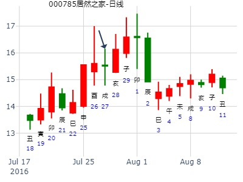
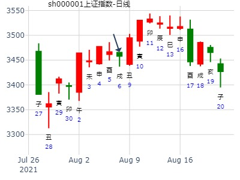

主帖标题: 大盘连续下跌，占何日止跌反弹
公历起卦时间：2014年1月10日8时12分 (手工指定)
干支：癸巳年 乙丑月 辛巳日 壬辰时 （日空：申酉）
神煞：驿马－亥 桃花－午 日禄－酉 贵人－寅，午
兑宫：地山谦 兑宫：地山谦
六神 伏神 本 卦 变 卦
腾蛇 兄弟癸酉金 ▅▅ ▅▅ 兄弟癸酉金 ▅▅ ▅▅
勾陈 子孙癸亥水 ▅▅ ▅▅ 世 子孙癸亥水 ▅▅ ▅▅ 世
朱雀 父母癸丑土 ▅▅ ▅▅ 父母癸丑土 ▅▅ ▅▅
青龙 兄弟丙申金 ▅▅▅▅▅ 兄弟丙申金 ▅▅▅▅▅
玄武 妻财丁卯木 官鬼丙午火 ▅▅ ▅▅ 应 官鬼丙午火 ▅▅ ▅▅ 应
白虎 父母丙辰土 ▅▅ ▅▅ 父母丙辰土 ▅▅ ▅▅
主帖标题: 试测上证涨幅
试测2.28自选股第二面收盘涨幅最大股票名称？
公历起卦时间：2020年2月28日13时14分 (电脑自动)
干支：庚子年 戊寅月 辛丑日 乙未时 （日空：辰巳）
神煞：驿马－亥 桃花－午 日禄－酉 贵人－寅，午
兑宫：地山谦 兑宫：地山谦
六神 伏神 本 卦 变 卦
螣蛇 兄弟癸酉金 ▅▅ ▅▅ 兄弟癸酉金 ▅▅ ▅▅
勾陈 子孙癸亥水 ▅▅ ▅▅ 世 子孙癸亥水 ▅▅ ▅▅ 世
朱雀 父母癸丑土 ▅▅ ▅▅ 父母癸丑土 ▅▅ ▅▅
青龙 兄弟丙申金 ▅▅▅▅▅ 兄弟丙申金 ▅▅▅▅▅
玄武 妻财丁卯木 官鬼丙午火 ▅▅ ▅▅ 应 官鬼丙午火 ▅▅ ▅▅ 应
白虎 父母丙辰土 ▅▅ ▅▅ 父母丙辰土 ▅▅ ▅▅
试测上证2021.2.4收盘个位数是几？
公历起卦时间：2021年2月4日9时57分 (电脑自动)
干支：辛丑年 庚寅月 癸未日 丁巳时 （日空：申酉）
神煞：驿马－巳 桃花－子 日禄－子 贵人－卯，巳
兑宫：地山谦 兑宫：地山谦
六神 伏神 本 卦 变 卦
白虎 兄弟癸酉金 ▅▅ ▅▅ 兄弟癸酉金 ▅▅ ▅▅
螣蛇 子孙癸亥水 ▅▅ ▅▅ 世 子孙癸亥水 ▅▅ ▅▅ 世
勾陈 父母癸丑土 ▅▅ ▅▅ 父母癸丑土 ▅▅ ▅▅
朱雀 兄弟丙申金 ▅▅▅▅▅ 兄弟丙申金 ▅▅▅▅▅
青龙 妻财丁卯木 官鬼丙午火 ▅▅ ▅▅ 应 官鬼丙午火 ▅▅ ▅▅ 应
玄武 父母丙辰土 ▅▅ ▅▅ 父母丙辰土 ▅▅ ▅▅
（主题不是问涨跌，仅供参考）
出生：2021 年 性别：男 占事：紫光国微2.3-2.5哪日顶？
排卦：元亨利贞网六爻在线排盘系统 https://www.china95.net
公历起卦时间：2021年2月4日10时21分 (电脑自动)
干支：辛丑年 庚寅月 癸未日 丁巳时 （日空：申酉）
兑宫：地山谦 兑宫：地山谦
六神 伏神 本 卦 变 卦
白虎 兄弟癸酉金 ▅▅ ▅▅ 兄弟癸酉金 ▅▅ ▅▅
螣蛇 子孙癸亥水 ▅▅ ▅▅ 世 子孙癸亥水 ▅▅ ▅▅ 世
勾陈 父母癸丑土 ▅▅ ▅▅ 父母癸丑土 ▅▅ ▅▅
朱雀 兄弟丙申金 ▅▅▅▅▅ 兄弟丙申金 ▅▅▅▅▅
青龙 妻财丁卯木 官鬼丙午火 ▅▅ ▅▅ 应 官鬼丙午火 ▅▅ ▅▅ 应
玄武 父母丙辰土 ▅▅ ▅▅ 父母丙辰土 ▅▅ ▅▅

占事：地山谦静卦。国脉科技2周
时间: 2022-02-14 12：22
干支: 壬寅年壬寅月戊戌日 (旬空: 辰巳 )
谦静卦
朱雀 ▅▅ ▅▅ 兄弟酉金
青龙 ▅▅ ▅▅ 子孙亥水 世
玄武 ▅▅ ▅▅ 父母丑土
白虎 ▅▅▅▅▅ 兄弟申金
腾蛇 妻财卯木▅▅ ▅▅ 官鬼午火 应
勾陈 ▅▅ ▅▅ 父母辰土
主帖标题: [大盘指数] 预测股市大盘未来趋势综合贴！
占事：阳历5月前上证指数底部？
起法：手动摇卦 国际易经网 http://www.iqing.net
公历：2008年3月27日20时37分 星期四
开元财经 六爻排盘系统期货版
干支：戊子年 乙卯月 丙寅日 戊戌时 (旬空：戌亥)
兑宫：地山谦 六神 伏 神 【本 卦】 青龙 ▅▅ ▅▅ 兄弟癸酉金
玄武 ▅▅ ▅▅ 子孙癸亥水 世
白虎 ▅▅ ▅▅ 父母癸丑土
螣蛇 ▅▅▅▅▅ 兄弟丙申金
勾陈 妻财丁卯木 ▅▅ ▅▅ 官鬼丙午火 应
朱雀 ▅▅ ▅▅ 父母丙辰土
预测结果： 27 28 31 01 02 二十 廿一 廿四 廿五 廿六 周四 周五 周一 周二 周三 丙寅 丁卯 庚午 辛未 壬申
卯日涨。申日绝卯，跌。酉日卯暗动，涨。丑日墓兄弟。涨。
主帖标题: 我也拿不准的测14日沪市行情卦！
占事：14日沪市走势？起卦方式：手工指定
公历时间：2011年 3月13日 23时3分
农历时间：辛卯年 二月初九日子时
干支： 辛卯年 辛卯月 丁卯日 壬子时 (旬空：戌亥) 《此处排法为早子时？》
兑宫：地山谦
六神 伏 神 【本 卦】
青龙 兄弟癸酉金 ━ ━
玄武 子孙癸亥水 ━ ━ 世
白虎 父母癸丑土 ━ ━
螣蛇 兄弟丙申金 ━━━
勾陈 妻财丁卯木 官鬼丙午火 ━ ━ 应
朱雀 父母丙辰土 ━ ━
卯财但三传，年、月、日，如果按典型的“极旺”格局，旺极而衰，财临勾陈说明开盘前30分钟-1小时内股指还有所震荡，上下难明，随后将大跌，坤8艮7，下跌7、80--150点左右
而“旺极”在六爻中运用从来都有争议，有的业界大家说：六爻没有旺极！再结合周5股指已经有所下跌，而周5晚上美股反弹，那么如果按常用的六爻旺衰论，代表指数、资金的财爻旺，应涨
如果真是这样的话，沪市应小涨25点左右。
这一卦令两种观点首次在测股市涨跌中遇到，我很难以断定，只能等明天“试目以待”了

谦静卦,300423-鲁亿通本年卯月走势如何?by?金玉堂
时间: 2015-03-11
干支: 乙未年己卯月丙戌日 (旬空: 午未 )
谦静卦
青龙 ▅▅ ▅▅ 兄弟酉金
玄武 ▅▅ ▅▅ 子孙亥水 世
白虎 ▅▅ ▅▅ 父母丑土
腾蛇 ▅▅▅▅▅ 兄弟申金
勾陈 妻财卯木▅▅ ▅▅ 官鬼午火 应
朱雀 ▅▅ ▅▅ 父母辰土
空下伏神，旺而得月，易于引拔？定性为涨。
财爻得月又日合。
300423鲁亿通， 卯月走势。地山谦静卦.pdf
主帖标题: A大家一起来，试测上证3.9收盘个位数？
-d
公历起卦时间：2021年3月9日14时37分 (电脑自动)
干支：辛丑年 辛卯月 丙辰日 乙未时 （日空：子丑）
兑宫：地山谦 兑宫：地山谦
六神 伏神 本 卦 变 卦
青龙 兄弟癸酉金 ▅▅ ▅▅ 兄弟癸酉金 ▅▅ ▅▅
玄武 子孙癸亥水 ▅▅ ▅▅ 世 子孙癸亥水 ▅▅ ▅▅ 世
白虎 父母癸丑土 ▅▅ ▅▅ 父母癸丑土 ▅▅ ▅▅
螣蛇 兄弟丙申金 ▅▅▅▅▅ 兄弟丙申金 ▅▅▅▅▅
勾陈 妻财丁卯木 官鬼丙午火 ▅▅ ▅▅ 应 官鬼丙午火 ▅▅ ▅▅ 应
朱雀 父母丙辰土 ▅▅ ▅▅ 父母丙辰土 ▅▅ ▅▅

主帖标题: 转发“个股卦例及反馈”
占事：永吉股份下周如何走？
公历起卦时间：2021年3月14日9时38分 (电脑自动)
干支：辛丑年 辛卯月 辛酉日 癸巳时 （日空：子丑）
兑宫：地山谦 兑宫：地山谦
六神 伏神 本 卦 变 卦
螣蛇 兄弟癸酉金 ▅▅ ▅▅ 兄弟癸酉金 ▅▅ ▅▅
勾陈 子孙癸亥水 ▅▅ ▅▅ 世 子孙癸亥水 ▅▅ ▅▅ 世
朱雀 父母癸丑土 ▅▅ ▅▅ 父母癸丑土 ▅▅ ▅▅
青龙 兄弟丙申金 ▅▅▅▅▅ 兄弟丙申金 ▅▅▅▅▅
玄武 妻财丁卯木 官鬼丙午火 ▅▅ ▅▅ 应 官鬼丙午火 ▅▅ ▅▅ 应
白虎 父母丙辰土 ▅▅ ▅▅ 父母丙辰土 ▅▅ ▅▅
姓名： 男 占事：415山煤国际 一周
起卦方式：手动摇卦 易经股市论坛在线排盘系统
公历时间：2014年5月13日14时8分
干 支：甲午年 己巳月 甲申日 辛未时
旬 空：辰巳 戌亥 (午未) 戌亥
兑宫：地山谦
六神 伏 神 【本 卦】
玄武 ▄▄ ▄▄ 兄弟癸酉金
白虎 ▄▄ ▄▄ 子孙癸亥水 世
螣蛇 ▄▄ ▄▄ 父母癸丑土
勾陈 ▄▄▄▄▄ 兄弟丙申金
朱雀 妻财丁卯木 ▄▄ ▄▄ 官鬼丙午火 应
青龙 ▄▄ ▄▄ 父母丙辰土
世爻月破日生。卯弱。
姓名： 男 占事：415山煤国际514
起卦方式：手动摇卦
公历时间：2014年5月13日20时37分
干 支：甲午年 己巳月 甲申日 甲戌时
旬 空：辰巳 戌亥 (午未) 申酉
乾宫：天地否（六合） 离宫：天火同人（归魂）
六神 伏 神 【本 卦】 【变 卦】
玄武 ▄▄▄▄▄ 父母壬戌土 应 ▄▄▄▄▄ 父母壬戌土 应
白虎 ▄▄▄▄▄ 兄弟壬申金 ▄▄▄▄▄ 兄弟壬申金
螣蛇 ▄▄▄▄▄ 官鬼壬午火 ▄▄▄▄▄ 官鬼壬午火
勾陈 ▄▄ ▄▄ 妻财乙卯木 世X-> ▄▄▄▄▄ 子孙己亥水 世
朱雀 ▄▄ ▄▄ 官鬼乙巳火 ▄▄ ▄▄ 父母己丑土
青龙 子孙甲子水 ▄▄ ▄▄ 父母乙未土 X-> ▄▄▄▄▄ 妻财己卯木
------------------------
反应一种三合局能量一步到位释放的趋势。
前有未日亥卯未（亥月破，此处不影响合局）大涨。
后有酉日破三合局，就开跌。
占事：300480光力科技下午跟明天涨跌
公历起卦时间：2016年6月6日12时20分 (电脑自动)
干支：丙申年 甲午月 己未日 庚午时 （日空：子丑）
兑宫：地山谦 兑宫：地山谦
六神 伏神 本 卦 变 卦
勾陈 兄弟癸酉金 ▅▅ ▅▅ 兄弟癸酉金 ▅▅ ▅▅
朱雀 子孙癸亥水 ▅▅ ▅▅ 世 子孙癸亥水 ▅▅ ▅▅ 世
青龙 父母癸丑土 ▅▅ ▅▅ 父母癸丑土 ▅▅ ▅▅
玄武 兄弟丙申金 ▅▅▅▅▅ 兄弟丙申金 ▅▅▅▅▅
白虎 妻财丁卯木 官鬼丙午火 ▅▅ ▅▅ 应 官鬼丙午火 ▅▅ ▅▅ 应
腾蛇 父母丙辰土 ▅▅ ▅▅ 父母丙辰土 ▅▅ ▅▅
主帖标题: 寻找志同道合的股票卦友合作
300652走势
起卦公历：2021年6月2日16时30分(北京时间)
起卦
干支： 辛丑年 癸巳月 辛巳日 丙申时 (卦身：戌)
主变卦 地山谦(兑宫) [空亡:申、酉]
螣蛇 ━ ━ 兄弟酉金
勾陈 ━ ━ 子孙亥水 世
朱雀 ━ ━ 父母丑土
青龙 ━━━ 兄弟申金
玄武 ━ ━ 官鬼午火 应
白虎 ━ ━ 父母辰土
这支股票下周涨多跌少，周五涨到最高点，也就这一周的走势。
主帖标题: 7月29日-8月2日大盘涨跌卦
占事：7月29日-8月2日大盘涨跌？
公历起卦时间：2013年7月26日16时39分 (手工指定)
干支：癸巳年 己未月 癸巳日 庚申时 （日空：午未）
神煞：驿马－亥 桃花－午 日禄－子 贵人－卯，巳
兑宫：地山谦 兑宫：地山谦
六神 伏神 本 卦 变 卦
白虎 兄弟癸酉金 ▅▅ ▅▅ 兄弟癸酉金 ▅▅ ▅▅
腾蛇 子孙癸亥水 ▅▅ ▅▅ 世 子孙癸亥水 ▅▅ ▅▅ 世
勾陈 父母癸丑土 ▅▅ ▅▅ 父母癸丑土 ▅▅ ▅▅
朱雀 兄弟丙申金 ▅▅▅▅▅ 兄弟丙申金 ▅▅▅▅▅
青龙 妻财丁卯木 官鬼丙午火 ▅▅ ▅▅ 应 官鬼丙午火 ▅▅ ▅▅ 应
玄武 父母丙辰土 ▅▅ ▅▅ 父母丙辰土 ▅▅ ▅▅
巳日世爻日破，跌。
酉日财爻日破，最低点。戌日则逢合，涨。
主帖标题: 000785武汉中商明天涨跌
占事：000785武汉中商周四周五涨跌
公历起卦时间：2016年7月27日15时31分 (电脑自动)
干支：丙申年 乙未月 庚戌日 甲申时 （日空：寅卯）
神煞：驿马－申 桃花－卯 日禄－申 贵人－丑，未
兑宫：地山谦 兑宫：地山谦
六神 伏神 本 卦 变 卦
腾蛇 兄弟癸酉金 ▅▅ ▅▅ 兄弟癸酉金 ▅▅ ▅▅
勾陈 子孙癸亥水 ▅▅ ▅▅ 世 子孙癸亥水 ▅▅ ▅▅ 世
朱雀 父母癸丑土 ▅▅ ▅▅ 父母癸丑土 ▅▅ ▅▅
青龙 兄弟丙申金 ▅▅▅▅▅ 兄弟丙申金 ▅▅▅▅▅
玄武 妻财丁卯木 官鬼丙午火 ▅▅ ▅▅ 应 官鬼丙午火 ▅▅ ▅▅ 应
白虎 父母丙辰土 ▅▅ ▅▅ 父母丙辰土 ▅▅ ▅▅
财空照样涨。隔日即亥子子孙旺值班涨？

主帖标题: 7月5至7月9日大盘预测
公历时间：2021年7月2日15时37分
干 支：辛丑年 甲午月 辛亥日 丙申时
旬 空：辰巳 辰巳 寅卯 辰巳
兑宫：地山谦
六神 伏 神 【本 卦】
螣蛇 ▄▄ ▄▄ 兄弟癸酉金
勾陈 ▄▄ ▄▄ 子孙癸亥水 世
朱雀 ▄▄ ▄▄ 父母癸丑土
青龙 ▄▄▄▄▄ 兄弟丙申金
玄武 妻财丁卯木 ▄▄ ▄▄ 官鬼丙午火 应
白虎 ▄▄ ▄▄ 父母丙辰土
亥日子孙当值，照样跌。莫非卯木旬空之故？

占事：000600
起卦方式：手工指定 易经股市论坛 www.yijingstock.com 在线排盘系统
公历时间：2013年8月14日9时16分
干 支：癸巳年 庚申月 壬子日 乙巳时
旬 空：午未 子丑 (寅卯) 寅卯
兑宫：地山谦
六神 伏 神 【本 卦】
白虎 ▄▄ ▄▄ 兄弟癸酉金
螣蛇 ▄▄ ▄▄ 子孙癸亥水 世
勾陈 ▄▄ ▄▄ 父母癸丑土
朱雀 ▄▄▄▄▄ 兄弟丙申金
青龙 妻财丁卯木 ▄▄ ▄▄ 官鬼丙午火 应
玄武 ▄▄ ▄▄ 父母丙辰土
财爻旬空。
试断：才空不上卦收阴。
高开后震荡向下收跌0.06、1.44%的阴线。
占事：中粮地产近期走势 卦主：悟道喜悦
起卦方式：手动摇卦 易经股市论坛在线排盘系统
公历时间：2014年8月20日14时22分
干 支：甲午年 壬申月 癸亥日 己未时
旬 空：辰巳 戌亥 (子丑) 子丑
兑宫：地山谦
六神 伏 神 【本 卦】
白虎 ▄▄ ▄▄ 兄弟癸酉金
螣蛇 ▄▄ ▄▄ 子孙癸亥水 世
勾陈 ▄▄ ▄▄ 父母癸丑土
朱雀 ▄▄▄▄▄ 兄弟丙申金
青龙 妻财丁卯木 ▄▄ ▄▄ 官鬼丙午火 应
玄武 ▄▄ ▄▄ 父母丙辰土
旬尾，隔天即戌亥空。世爻旬空则跌。等9月1日出空则涨。
主帖标题: 上证8.6收盘走势
公历起卦时间：2021年8月6日13时20分 (电脑自动)
干支：辛丑年 乙未月 丙戌日 乙未时 （日空：午未）
神煞：驿马－申 桃花－卯 日禄－巳 贵人－酉，亥
兑宫：地山谦 兑宫：地山谦
六神 伏神 本 卦 变 卦
青龙 兄弟癸酉金 ▅▅ ▅▅ 兄弟癸酉金 ▅▅ ▅▅
玄武 子孙癸亥水 ▅▅ ▅▅ 世 子孙癸亥水 ▅▅ ▅▅ 世
白虎 父母癸丑土 ▅▅ ▅▅ 父母癸丑土 ▅▅ ▅▅
螣蛇 兄弟丙申金 ▅▅▅▅▅ 兄弟丙申金 ▅▅▅▅▅
勾陈 妻财丁卯木 官鬼丙午火 ▅▅ ▅▅ 应 官鬼丙午火 ▅▅ ▅▅ 应
朱雀 父母丙辰土 ▅▅ ▅▅ 父母丙辰土 ▅▅ ▅▅

以岭药业8.25收盘走势？
公历起卦时间：2021年8月25日8时24分 (电脑自动)
干支：辛丑年 丙申月 乙巳日 庚辰时 （日空：寅卯）
神煞：驿马－亥 桃花－午 日禄－卯 贵人－子，申
兑宫：地山谦 兑宫：地山谦
六神 伏神 本 卦 变 卦
玄武 兄弟癸酉金 ▅▅ ▅▅ 兄弟癸酉金 ▅▅ ▅▅
白虎 子孙癸亥水 ▅▅ ▅▅ 世 子孙癸亥水 ▅▅ ▅▅ 世
螣蛇 父母癸丑土 ▅▅ ▅▅ 父母癸丑土 ▅▅ ▅▅
勾陈 兄弟丙申金 ▅▅▅▅▅ 兄弟丙申金 ▅▅▅▅▅
朱雀 妻财丁卯木 官鬼丙午火 ▅▅ ▅▅ 应 官鬼丙午火 ▅▅ ▅▅ 应
青龙 父母丙辰土 ▅▅ ▅▅ 父母丙辰土 ▅▅ ▅▅
主帖标题: 8月8日至8月12日大盘预测
公历时间：2022年8月8日6时45分
干 支：壬寅年 戊申月 癸巳日 乙卯时
旬 空：辰巳 寅卯 午未 子丑
神 煞：驿马─亥 桃花─午 日禄─子 贵人─巳，卯
中国预测网纳甲六爻排盘
兑宫：地山谦
六神 伏 神 【本 卦】
白虎 ▄▄ ▄▄ 兄弟癸酉金
螣蛇 ▄▄ ▄▄ 子孙癸亥水 世
勾陈 ▄▄ ▄▄ 父母癸丑土
朱雀 ▄▄▄▄▄ 兄弟丙申金
青龙 妻财丁卯木 ▄▄ ▄▄ 官鬼丙午火 应
玄武 ▄▄ ▄▄ 父母丙辰土
世爻暗动，空下伏神，定性为涨。
占事：8.15创业板指数399006走势
姓名：入定观 男 起卦方式：手动摇卦
中国预测网六爻排盘http://pp.yuceweb.com/6y.asp
公历时间：2022年8月15日7时31分
干 支：壬寅年 戊申月 庚子日 庚辰时
旬 空：辰巳 寅卯 辰巳 申酉
兑宫：地山谦
六神 伏 神 【本 卦】
螣蛇 ▄▄ ▄▄ 兄弟癸酉金
勾陈 ▄▄ ▄▄ 子孙癸亥水 世
朱雀 ▄▄ ▄▄ 父母癸丑土
青龙 ▄▄▄▄▄ 兄弟丙申金
玄武 妻财丁卯木 ▄▄ ▄▄ 官鬼丙午火 应
白虎 ▄▄ ▄▄ 父母丙辰土
冲飞露伏涨？
兑宫：地山谦
六神 伏 神 【本 卦】
玄武 ▄▄ ▄▄ 兄弟癸酉金
白虎 ▄▄ ▄▄ 子孙癸亥水 世
螣蛇 ▄▄ ▄▄ 父母癸丑土
勾陈 ▄▄▄▄▄ 兄弟丙申金
朱雀 妻财丁卯木 ▄▄ ▄▄ 官鬼丙午火 应
青龙 ▄▄ ▄▄ 父母丙辰土
永启。1024周大盘。谦静卦。
时间: 2022-10-21 16：19
干支: 壬寅年庚戌月丁未日 (旬空: 寅卯 )
谦静卦
青龙 ▅▅ ▅▅ 兄弟酉金
玄武 ▅▅ ▅▅ 子孙亥水 世
白虎 ▅▅ ▅▅ 父母丑土
腾蛇 ▅▅▅▅▅ 兄弟申金
勾陈 妻财卯木▅▅ ▅▅ 官鬼午火 应
朱雀 ▅▅ ▅▅ 父母辰土
财爻弱又旬空，真空。跌。

主帖标题: 发几个周卦 大家看看那个好
姓名：W 出生年:1981 性别：男 占事：600055到29号财
起卦方式：手工指定
公历时间：2019年11月21日20时23分
干 支：庚子年 癸亥月 壬戌日 庚戌时
旬 空：辰巳 子丑 子丑 寅卯
神 煞：驿马─申 桃花─卯 日禄─亥 贵人─巳，卯
兑宫：地山谦
六神 伏 神 【本 卦】
白虎 ▄▄ ▄▄ 兄弟癸酉金
螣蛇 ▄▄ ▄▄ 子孙癸亥水 世
勾陈 ▄▄ ▄▄ 父母癸丑土
朱雀 ▄▄▄▄▄ 兄弟丙申金
青龙 妻财丁卯木 ▄▄ ▄▄ 官鬼丙午火 应
玄武 ▄▄ ▄▄ 父母丙辰土
旬尾，然后戌亥空，世空，跌？
出生：没填 年 性别：男 占事：002610爱康科技下午跟明天涨跌
排卦：元亨利贞网六爻在线排盘系统 http://www.china95.net
公历起卦时间：2013年12月24日11时40分 (电脑自动)
干支：癸巳年 甲子月 甲子日 庚午时 （日空：戌亥）
神煞：驿马－寅 桃花－酉 日禄－寅 贵人－丑，未
兑宫：地山谦 兑宫：地山谦
六神 伏神 本 卦 变 卦
玄武 兄弟癸酉金 ▅▅ ▅▅ 兄弟癸酉金 ▅▅ ▅▅
白虎 子孙癸亥水 ▅▅ ▅▅ 世 子孙癸亥水 ▅▅ ▅▅ 世
腾蛇 父母癸丑土 ▅▅ ▅▅ 父母癸丑土 ▅▅ ▅▅
勾陈 兄弟丙申金 ▅▅▅▅▅ 兄弟丙申金 ▅▅▅▅▅
朱雀 妻财丁卯木 官鬼丙午火 ▅▅ ▅▅ 应 官鬼丙午火 ▅▅ ▅▅ 应
青龙 父母丙辰土 ▅▅ ▅▅ 父母丙辰土 ▅▅ ▅▅
制杀太过嫌疑，子日跌。丑日子孙减弱，涨？
戌亥虽空，涨。流日靠近寅卯了？世爻又同得日月，旺而非空。
主帖标题: 一个论坛QQ友看好的一只股票---六爻预测
没填 年 性别：男 占事：600696多伦股份明天涨跌
排卦：元亨利贞网六爻在线排盘系统 http://www.china95.net
公历起卦时间：2014年12月11日17时7分 (电脑自动)
干支：甲午年 丙子月 丙辰日 丁酉时 （日空：子丑）
神煞：驿马－寅 桃花－酉 日禄－巳 贵人－酉，亥
兑宫：地山谦 兑宫：地山谦
六神 伏神 本 卦 变 卦
青龙 兄弟癸酉金 ▅▅ ▅▅ 兄弟癸酉金 ▅▅ ▅▅
玄武 子孙癸亥水 ▅▅ ▅▅ 世 子孙癸亥水 ▅▅ ▅▅ 世
白虎 父母癸丑土 ▅▅ ▅▅ 父母癸丑土 ▅▅ ▅▅
腾蛇 兄弟丙申金 ▅▅▅▅▅ 兄弟丙申金 ▅▅▅▅▅
勾陈 妻财丁卯木 官鬼丙午火 ▅▅ ▅▅ 应 官鬼丙午火 ▅▅ ▅▅ 应
朱雀 父母丙辰土 ▅▅ ▅▅ 父母丙辰土 ▅▅ ▅▅
巳亥冲，世爻暗动。
主帖标题: 子月大盘
求测人：某人，女，辛亥(1971年)，电脑摇卦(起卦方式)
占问事宜：28-31 戊寅己卯庚辰辛巳
公历：2015年12月25日14时57分，星期五。
干支：乙未年 戊子月 乙亥日 癸未时 (卦身：戌)
主变卦 地山谦(兑宫) [空亡:申、酉]
玄武 ▅▅ ▅▅ 兄弟癸酉金
白虎 ▅▅ ▅▅ 子孙癸亥水 世
螣蛇 ▅▅ ▅▅ 父母癸丑土
勾陈 ▅▅▅▅▅ 兄弟丙申金
朱雀 妻财丁卯木 ▅▅ ▅▅ 官鬼丙午火 应
青龙 ▅▅ ▅▅ 父母丙辰土
子孙得日月，照样一路大跌？
莫非制杀太过？
占事：子月上证如何走？ -幸福的伟兄
时间: 2016-12-01 14时58分 （电脑自动）
干支: 丙申年己亥月丁巳日 (旬空: 子丑 )
谦静卦
青龙 ▅▅ ▅▅ 兄弟酉金
玄武 ▅▅ ▅▅ 子孙亥水 世
白虎 ▅▅ ▅▅ 父母丑土
腾蛇 ▅▅▅▅▅ 兄弟申金
勾陈 妻财卯木▅▅ ▅▅ 官鬼午火 应
朱雀 ▅▅ ▅▅ 父母辰土
此处食杀均衡，为何跌？莫非亥水暗动，导致子孙太旺？

主帖标题: 关注002549凯美特气子月内(12月16日 到1月4日)的涨跌卦集合
占事：002549凯美特气明天涨跌
公历时间：2020年12月17日17时59分
干 支：庚子年 戊子月 甲午日 癸酉时
旬 空：辰巳 午未 辰巳 戌亥
神 煞：驿马─申 桃花─卯 日禄─寅 贵人─丑，未
兑宫：地山谦
六神 伏 神 【本 卦】
玄武 ▄▄ ▄▄ 兄弟癸酉金
白虎 ▄▄ ▄▄ 子孙癸亥水 世
螣蛇 ▄▄ ▄▄ 父母癸丑土
勾陈 ▄▄▄▄▄ 兄弟丙申金
朱雀 妻财丁卯木 ▄▄ ▄▄ 官鬼丙午火 应
青龙 ▄▄ ▄▄ 父母丙辰土
涨。
主帖标题: 试测12.16上证收盘个位数？-byn
出生：2021 年 性别：男 占事：没填
公历起卦时间：2021年12月16日10时5分 (电脑自动)
干支：辛丑年 庚子月 戊戌日 丁巳时 （日空：辰巳）
神煞：驿马－申 桃花－卯 日禄－巳 贵人－丑，未
兑宫：地山谦 兑宫：地山谦
六神 伏神 本 卦 变 卦
朱雀 兄弟癸酉金 ▅▅ ▅▅ 兄弟癸酉金 ▅▅ ▅▅
青龙 子孙癸亥水 ▅▅ ▅▅ 世 子孙癸亥水 ▅▅ ▅▅ 世
玄武 父母癸丑土 ▅▅ ▅▅ 父母癸丑土 ▅▅ ▅▅
白虎 兄弟丙申金 ▅▅▅▅▅ 兄弟丙申金 ▅▅▅▅▅
螣蛇 妻财丁卯木 官鬼丙午火 ▅▅ ▅▅ 应 官鬼丙午火 ▅▅ ▅▅ 应
勾陈 父母丙辰土 ▅▅ ▅▅ 父母丙辰土 ▅▅ ▅▅